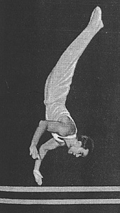

Evgeny Korolkov (USSR)
1952 Olympic PB Silver
Medalist
1954 World R Silver Medalist

Medal Total:
Olympic Games: 1
Gold, 1 Silver
World Championships: 1 Gold, 1 Silver
Korolkov was born on October 9, 1930 in Moscow. He joined the Soviet national team in 1950 and was a member of the 1952 USSR Olympic team. After retiring, he became a coach at the Dinamo Moscow club -- his most famous pupils were Mikhail Voronin and Valery Karasyov.
Competition Results
1945
All-Union Youth Championships (boys' category): 2nd AA, 1st PH
1946
All-Union Youth Championships: 1st AA, 1st PH, 1st R, 1st PB
1949
Moscow Championships: 2nd AA
USSR Championships: 1st Team, 9th AA
USSR-HUN Dual Meet: 1st Team, 3rd AA, 3rd PH, 3rd R, 3rd PB, 3rd HB
1950
Moscow Championships: 1st AA, 1st PH, 1st R, 1st PB
USSR Championships: 1st Team, 5th AA
1951
Moscow Championships: 1st AA
USSR Championships: 1st Team, 6th AA
1952
Moscow Championships: 4th AA
Olympic Games: 1st Team, 6th AA, 2nd PH, 5th PB
1953
USSR Championships: 2nd Team, 4th AA
1954
Moscow Championships: 1st AA
World Championships: 1st Team, 7th AA, 2nd R
1955
USSR Championships: 5th AA, 2nd R
World Festival of Youth and Students: 1st Team, 4th AA
1956
USSR Championships: 1st Team, 3rd PH, 5th R
1957
USSR Cup: 5th AA, 3rd R, 3rd PB
This page was created on September
03, 2005 and was last updated on November 5, 2024.
© Gymn Forum